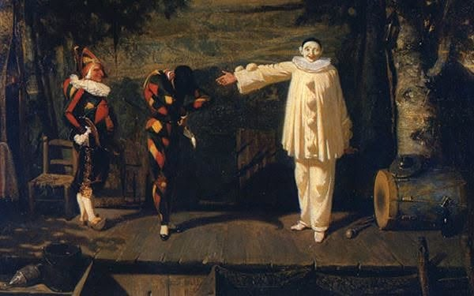
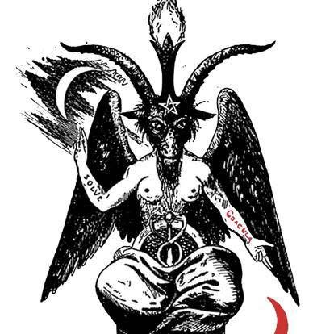

Other languages: Français
Thrice-great Harlequin: the livery of Mercury
By Anibal Edelberto Amiot — Published September 3, 2026 · translated from the French

Guillaume Apollinaire's poem “Crépuscule” closes on a strange line: the dwarf watches, sadly, « grandir l'arlequin trismégiste » (“the thrice-great harlequin grow”). Trismegistus — “thrice very great” — is the epithet of Hermes in his Egyptianised form, Hermes Trismegistus, patron of alchemy and of the Hermetic texts. That this word should come to rest on a trestle-stage Harlequin, in a poem of 1913, is no accident of vocabulary: it is an identification, and a scholarly reading has demonstrated it closely.
The axis of the poem
Françoise Dininman, in her reading of “Crépuscule” (“Naissance de "Crépuscule" ou les tours de Mercure”, Que Vlo-Ve), shows that the whole poem is organised around a vertical zenith–nadir axis, holding together “schemes of elevation” — the sky, an outstretched arm, a star, the verb “to grow” — and “schemes of descent” — the pond, a hanged man, a dwarf. On this axis she identifies Harlequin with Hermes without hesitation, calling him an axis mundi, a link between earth and heaven — the same vocabulary, almost word for word, that the history of religions reserves for the axis of the world.
Dininman goes further, without settling the matter: she asks whether the actors of the commedia dell'arte might themselves have been conscious Gnostics, handing down a knowledge beneath the mask, rather than mere players. It is a question she asks, not a conclusion — and it deserves to be reported as such, an open scholarly question rather than an established fact.
A god born stealing cattle, before he invented the lyre
It is worth taking the story of Hermes back to its source, because it directly prepares this identification. Barely born, the god steals Apollo's cattle, then, with a tortoise shell found on his way, fashions the very first stringed instrument. When Apollo finds him, charmed by the instrument, Hermes gives it to him — in exchange for his golden shepherd's staff, the very object that will become the caduceus. The tortoise, a creature of the depths if ever there was one, thus supplies the material for an instrument that seals the exchange between the two gods and founds, in the same gesture, the attribute by which Hermes will henceforth lead souls.
The same shell plays a founding role elsewhere, with no historical contact linking the two traditions: the Chinese legend of the Yi King tells that a divine tortoise emerged from the River Luo bearing on its back a pattern of nine numbers — the oldest attested magic square in the world. Two distinct traditions, one Greek, the other Chinese, thus make the same shell the matrix of an object that structures: a lyre on one side, a magic square on the other.
“Mercury's own livery”
Then comes the most direct testimony of all. Thelma Niklaus, in Harlequin Phoenix (1956, quoted by Richard Stamelman), writes that Harlequin wore “Mercury's own livery” — a many-coloured costume made for him by the clowns, a sign of the god's protection and of the instability of temperament that goes with it — and that he held a staff as Mercury held the caduceus. This is not an analogy fetched from afar: it is a named source, using almost the very vocabulary of this text.
Aleister Crowley, in The Book of Thoth, confirms the same association twice, in two separate essays — which counts double, since nothing obliged him to repeat it. Writing on the Fool (Atu 0), he links the “motley costume” of Joseph and of Jesus to the saviour disguised as a madman, and reads in Harlequin's troupe a parodic “Tetragrammaton”: Pantaloon the old buffoon, Buffoon and Harlequin as two faces of the Fool, Columbine as the Virgin. Writing on Art (Atu XIV), he this time links the “motley costume” directly to a phenomenon of alchemical putrefaction — the appearance of many-coloured lights in the Great Work. A third passage, on Justice (Atu VIII), extends the vocabulary to balance: the card is described there as “the partner and fulfilment of the Fool”, her scales holding Alpha and Omega in perfect equilibrium.
A twentieth-century witness, with no demonstrated link to any of these traditions, closes the case by quite another path. The painter Georges Rouault, in a letter to Édouard Schuré, recognises in the old clown mending his “spangled costume” a mirror of himself — « nous portons tous un habit pailleté » (“we all wear a spangled costume”), he writes, before adding that he would leave his own to no one, not even a king. Rouault writes neither about Mercury nor about the caduceus; what he brings lies elsewhere — the proof that a painter of the last century, alone before the same visual motif, rediscovers by himself the equivalence between the costume and the soul.
Baphomet and the Magician

Éliphas Lévi's engraving of Baphomet carries the same axis into the body itself: one arm raised, the other lowered, Solve and Coagula inscribed on the forearms — the same elevation and the same descent that Dininman reads in Harlequin-Hermes, held together rather than resolved in a single direction. The very name of Baphomet joins the thread of this project directly, through a biographical rather than an iconographic fact: “Tau Baphomet” was the initiatic title that Crowley — the very author of the Book of Thoth cited above — took within the O.T.O., while elsewhere he styled himself “the Beast 666”. Both titles belong to the same man.
This same gesture, one arm towards the sky and the other towards the table, is not peculiar to Baphomet: the Magician (le Bateleur), first trump of the tarot, is conventionally shown in the same posture. An observation proper to this project rather than attested in the literature on the tarot: the table or temenos before the Magician is traditionally drawn there on three legs rather than four — the same “mute rite” that Dininman recognises in Harlequin on his trestles is played out again, under different names, in the Magician and in Baphomet.
The wand and the mirror
The jester's bauble gathers into a single object everything this article has followed separately: a short staff topped with a small carved head, often the jester's own face in miniature. As a staff, it measures — a module, in the sense in which this project already uses the word elsewhere. As a small head held at arm's length, it is also a mirror: a reduced image of the face of the one who holds it. An axis, in this reading, is at once a wand and a mirror — exactly the double character that the alchemical tradition assigns to Mercury: the messenger who measures the distances between worlds, and the quicksilver that reflects everything that comes near it without retaining any form of its own.
This is perhaps the simplest meaning of “thrice-great” applied to a trestle-stage clown: not three times great through an accumulation of power, but great in three registers at once — the one who measures, the one who reflects, and the one who, between the two, never stops carrying the same staff.
Sources mentioned: Françoise Dininman, “Naissance de "Crépuscule" ou les tours de Mercure”, Que Vlo-Ve, issues 6–7; Guillaume Apollinaire, “Crépuscule”, in Alcools (1913); T. Niklaus, Harlequin Phoenix, or the Rise and Fall of a Bergamask Rogue (Bodley Head, 1956), quoted by Richard Stamelman; Aleister Crowley, Le Livre de Thot (The Book of Thoth), essays on Trumps 0 (the Fool), VIII (Justice) and XIV (Art); Georges Rouault, letter to Édouard Schuré, published in Le Goéland, Paramé, June 1952; engraving of Baphomet, Éliphas Lévi (19th century, public domain).
For the notions used here — livery, verticality — see the project lexicon. This article was first published in French: Arlequin trismégiste : la livrée de Mercure.